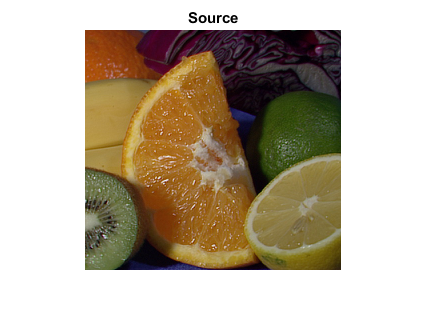

Histogram Calculation
In this demo, we show how to:
- Divide an image into its correspondent planes
- Calculate histograms of arrays of images by using the OpenCV function cv.calcHist
Sources:
Contents
Theory
Histograms are collected counts of data organized into a set of predefined bins. When we say data we are not restricting it to be intensity values. The data collected can be whatever feature you find useful to describe your image.
Let's see an example. Imagine that a matrix contains information of an image (i.e. intensity in the range ):

What happens if we want to count this data in an organized way? Since we know that the range of information value for this case is 256 values, we can segment our range in subparts (called bins) like:
and we can keep count of the number of pixels that fall in the range of each . Applying this to the example above we get the image below (axis x represents the bins and axis y the number of pixels in each of them).

This was just a simple example of how an histogram works and why it is useful. An histogram can keep count not only of color intensities, but of whatever image features that we want to measure (i.e. gradients, directions, etc).
Let's identify some parts of the histogram:
- dims: The number of parameters you want to collect data of. In our example, dims = 1 because we are only counting the intensity values of each pixel (in a grayscale image).
- bins: It is the number of subdivisions in each dim. In our example, bins = 16
- range: The limits for the values to be measured. In this case: range = [0,255]
What if you want to count two features? In this case your resulting histogram would be a 3D plot (in which x and y would be and for each feature and z would be the number of counts for each combination of . The same would apply for more features (of course it gets trickier).
For simple purposes, OpenCV implements the function cv.calcHist, which calculates the histogram of a set of arrays (usually images or image planes). It can operate with up to 32 dimensions. We will see it in the code below!
Code
This program:
- Loads an image
- Splits the image into its R, G and B planes
- Calculate the Histogram of each 1-channel plane by calling the function cv.calcHist
- Plot the three histograms in a window
Load source 8-bit color image
img = cv.imread(fullfile(mexopencv.root(), 'test', 'fruits.jpg'), ... 'Color',true, 'ReduceScale',2); imshow(img), title('Source')
Calculate histogram over each channel, 8-bit values are between [0,255]
counts = zeros(256,3); for i=1:3 I = img(:,:,i); if true % intervals: [0,1), [1,2), ..., [254,255), [255,256) counts(:,i) = cv.calcHist(I, [0 256], 'HistSize',256, 'Uniform',true); elseif mexopencv.require('images') % intervals: [-0.5,0.5), [0.5,1.5), ..., [253.5,254.5), [254.5,255.5) counts(:,i) = imhist(I, 256); elseif ~mexopencv.isOctave() % intervals: [0,1), [1,2), ..., [254,255), [255,256] counts(:,i) = histcounts(double(I), 0:256); elseif true % intervals: [0,1), [1,2), ..., [254,255), [255,255] counts(:,i) = histc(double(I(:)), 0:255); elseif true counts(:,i) = accumarray(double(I(:))+1, 1, [256 1]); else counts(:,i) = full(sparse(double(I(:))+1, 1, 1, 256, 1)); end end
Plot 1
clrs = 255*eye(3); % BGR out = zeros([300 512 3],'uint8'); sz = size(out); X = (1:256)' * round(sz(2) / 256); Y = sz(1) - round(counts / max(counts(:)) * sz(1)); for i=1:3 out = cv.polylines(out, [X Y(:,i)], ... 'Closed',false, 'Color',clrs(i,:), 'Thickness',2, 'LineType','AA'); end figure, imshow(out), title('Histogram')
Plot 2
clrs = {'r'; 'g'; 'b'};
a = [1.0, 0.7, 0.7];
if ~mexopencv.isOctave()
%HACK: Octave doesn't have histogram function yet
figure
for i=1:3
histogram('BinEdges',0:256, 'BinCounts',counts(:,i), ...
'FaceColor',clrs{i}, 'EdgeColor','none', 'FaceAlpha',a(i))
hold on
end
hold off, axis([0 256 0 Inf]), grid on
xlabel('Intensities'), ylabel('Counts'), title('Histogram')
end
Plot 3
figure hh = plot(0:255, counts); hold on for i=1:3 h = bar(0:255, counts(:,i), 'histc'); if mexopencv.isOctave() %HACK: Octave returns hggroup containing the patch object h = get(h, 'Children'); end %NOTE: FaceAlpha in Octave causes patch to become fully transparent set(h, 'EdgeColor','none', 'FaceColor',clrs{i}, 'FaceAlpha',0.25) set(hh(i), 'Color',clrs{i}, 'LineWidth',2) end hold off, axis([0 255 0 Inf]), grid on xlabel('Intensities'), ylabel('Counts'), title('Histogram') legend(hh, upper(clrs))
Plot 4
figure for i=1:3 subplot(3,1,i) h = bar(0:255, counts(:,i), 'histc'); if mexopencv.isOctave() %HACK: Octave returns hggroup containing the patch object h = get(h, 'Children'); %HACK: Octave creates very dense xticks 0:255 set(gca, 'XTick',0:50:255) end if true % gradient color clr = zeros(1,256,3); clr(:,:,i) = (0:255)/255; set(h, 'EdgeColor','none', 'CData',clr) else % flat color set(h, 'EdgeColor','none', 'FaceColor',clrs{i}) end axis([0 255 0 max(counts(:))]), grid on ylabel(upper(clrs{i})) if i==1, title('Histogram'); end end xlabel('Intensities')